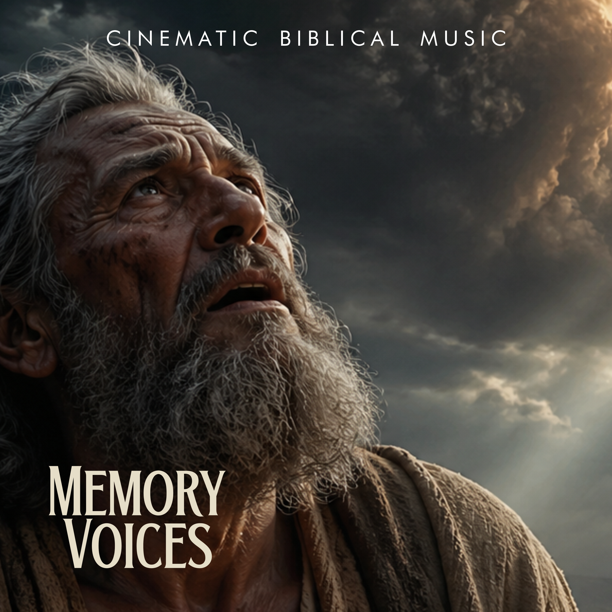
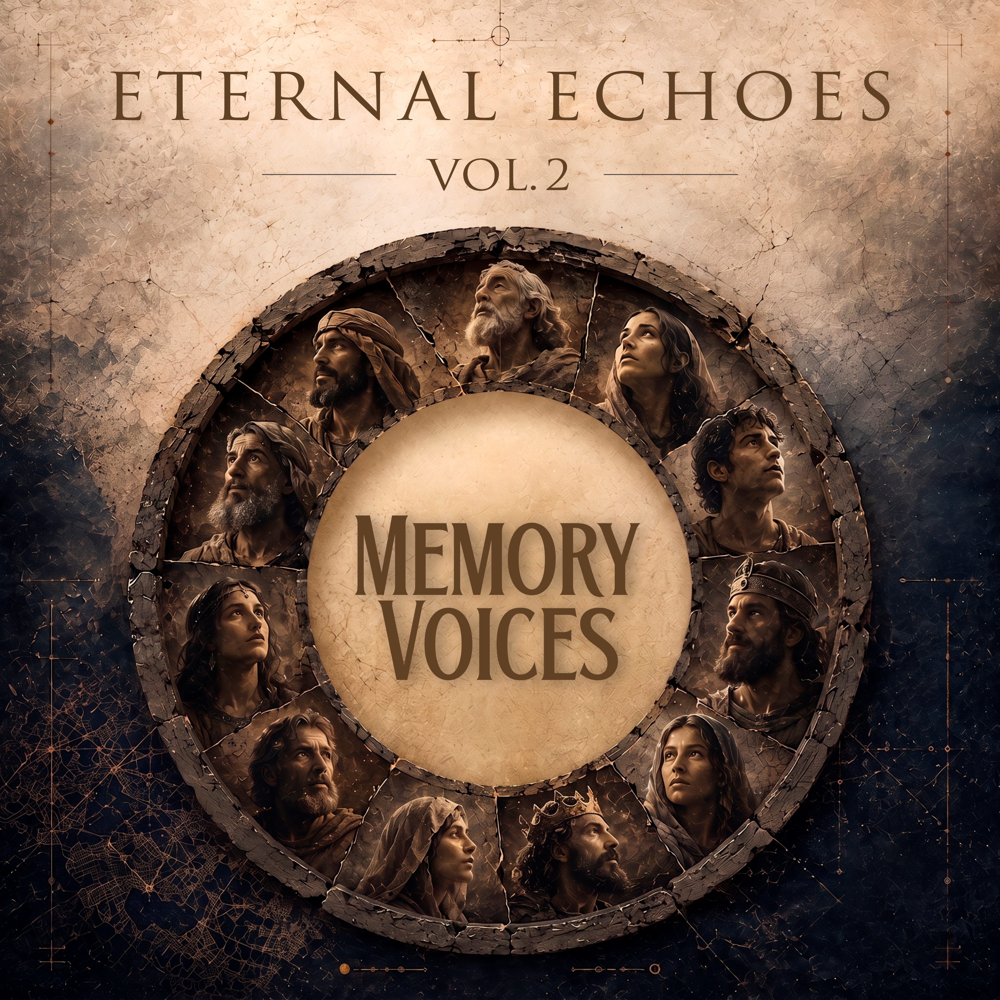

Eternal Echoes
Vol. 1
Ver canciones ＋

Eternal Echoes
Vol. 1
Ver canciones ＋
Eternal Echoes
Vol. 2
Ver canciones ＋

Eternal Echoes
Vol. 2
Ver canciones ＋La condición humana
detrás del mito.
MemoryVoices es un proyecto de música épica y cinematográfica que busca el sonido de la condición humana detrás del mito. Más allá de la grandiosidad de las hazañas de la antigüedad, este proyecto se adentra en la psicología de sus protagonistas: figuras que, bajo la apariencia de patriarcas y héroes, esconden una profunda lucha contra la duda, el dolor y la desesperanza. Su propuesta sonora nace en la tensión entre la debilidad del individuo y la grandeza que se le exige. Revela que la fragilidad y la fortaleza habitan en una sola persona, transformando el relato épico en una experiencia introspectiva y existencial. A través de paisajes sonoros densos y viscerales, MemoryVoices invita a un viaje hacia la vulnerabilidad de quienes, aun sintiéndose superados por sus propios fracasos o la incertidumbre del destino, se ven obligados a trascender. Es la banda sonora de la lucha interna; el rastro sonoro de hombres comunes enfrentados a lo eterno.
Nuevas historias, en camino.
Apóyame con un café.
Tu apoyo ayuda a que MemoryVoices siga creando música y dando voz a las historias detrás del mito.
Enlace de apoyo pendiente.